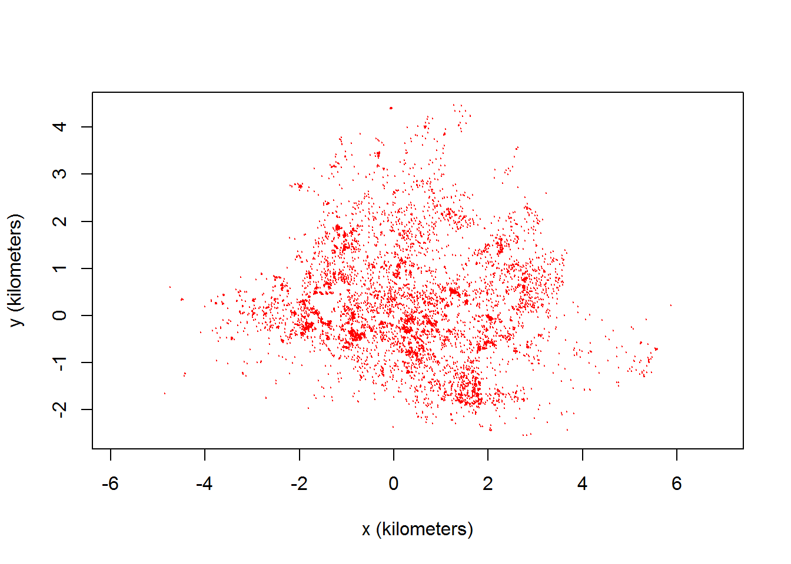
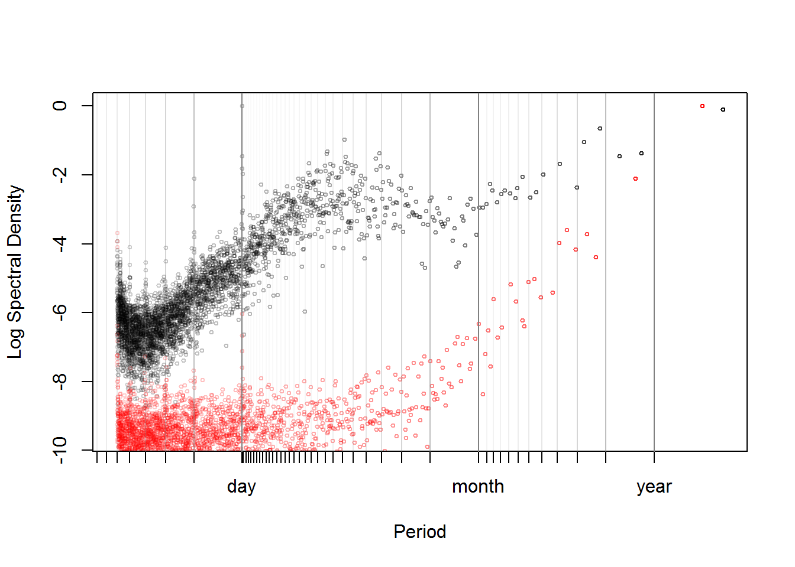

In this vignette, we walk through periodogram for movement data and periodic movement model fitting and selection.
It is assumed that you are already familiar with data preparation with ctmm, as well as the maximum likelihood procedure described in the variogram vignette.
Our example maned wolf data is already prepared into a telemetry object.
library(ctmm)
data(wolf)
Tay <- wolf$Tay
plot(Tay)
Before anything else, we want to plot the data in a way that makes periodic patterns apparent. This is the periodogram.
LSP <- periodogram(Tay,fast=2,res.time=2)The fast=2 option requests the use of the (much) faster FFT-based algorithm and furthermore samples a highly composite number of times. Set the argument to FALSE to revert to Scargle’s original algorithm, which involves fewer numerical approximations. The res.time argument increases the resolution of the temporal grid. The algorithm defaults to adequate resolution for regularly scheduled data (permitting gaps), while variable sampling rates require res.time>1 to resolve the fine scale spectrum correctly.
plot(LSP, max=TRUE, diagnostic=TRUE)
The max=TRUE option keeps only local maxima and often yields periodograms that are easier to interpret, especially when the resolution of the periodogram has been increased from the default. The diagnostic=TRUE option draws the periodogram of the sampling schedule with red symbols. If the periodogram of the sampling schedule exhibits peaks, this indicates that the corresponding peaks in the movement data could be simply caused by irregularities in the sampling schedule and not by periodicity in the movement. Periodograms should always be interpreted with some caution.
Here the periodogram exhibits clear peaks for periods of one day that are absent from the red periodogram. This is clear evidence of a daily periodicity in the process mean of the movement process of this individual. The peaks for integers fractions of a day (1/2, 1/3, 1/4…) are harmonics that indicate that the repeated segment of path is, as could be expected, not elliptical.
Periodograms are a great data exploration tool, but they do not detect everything. In particular circulation processes, those that induce circulatory patterns via a stochastic rotational effect, are often not visible in periodograms. Periodograms are also difficult to compare from one individual to the next, if the aperiodic stochastic movements of these individuals are not the same.
Circulatory patterns can be incorporated into stochastic continuous time movement models in two ways: via the mean of the process, modelling that the animal reverts to a point that moves periodically through time, or via the stochastic component, by including a rotation effect. The first is called a periodic-mean process, and the second is called a circulation process.
For periodic-mean processes, you need to specify one or more period values that you want ctmm to consider.
In our example, we are going to specify a period of a day, which is what the periodogram was saying. Other individuals in this population were also exhibiting a weekly periodicity, and in similar species, lunar cycles are well-known to affect ranging behaviors. Let us also put these periods into a model prototype.